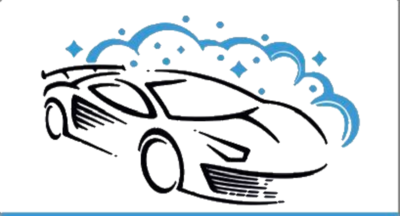

Außen- und Innenreinigung
Handwäsche, Felgenpflege, Innenraumreinigung und Tornador-Tiefenreinigung für ein rundum sauberes Fahrzeug.
Innenreinigung Bezirk Neunkirchen →Außenreinigung, Innenreinigung, Lackpolitur und Keramikversiegelung – alles aus einer Hand.
Termine nur nach Vereinbarung – bitte vorab kontaktieren
Von der gründlichen Außenwäsche bis zur mehrschichtigen Keramikversiegelung – jedes Paket ist klar aufgebaut mit transparenten Preisen und definierten Leistungen.

Handwäsche, Felgenpflege, Innenraumreinigung und Tornador-Tiefenreinigung für ein rundum sauberes Fahrzeug.
Innenreinigung Bezirk Neunkirchen →Zwei- und dreistufige Politur zur Kratzerentfernung sowie Keramikversiegelung mit bis zu 60 Monaten Standzeit.
Lackpolitur Bezirk Neunkirchen →Direkt per WhatsApp oder Telefon – ohne Formular, ohne Wartezeit. Flexible Termine nach Vereinbarung.
Keramikversiegelung Bezirk Neunkirchen →Alle Preise in EUR. Kleinunternehmerregelung gemäß § 6 Abs. 1 Z 27 UStG.
Echte Bewertungen aus Google – von Kunden aus Würflach, Neunkirchen und der Umgebung.
Ausgewählte Projekte aus Lackpolitur, Innenreinigung und Versiegelung.
Galerie öffnenPer WhatsApp oder Telefon melden. Bitte vor dem Besuch immer einen Termin vereinbaren.
Willendorferstraße 196, 2732 Würflach
Nur mit Terminvereinbarung. Bitte vorab per WhatsApp oder Telefon melden.
Wir betreuen Kunden aus Würflach, Neunkirchen, Ternitz, Gloggnitz, Wiener Neustadt und dem gesamten Bezirk Neunkirchen.
In Google Maps öffnenDie erste Ebene zeigt Kategorie, Preis und Nutzen. Mit „Mehr Infos“ öffnet sich direkt die komplette Leistungsübersicht des jeweiligen Pakets.
Direkt über WhatsApp oder per Telefon. Einfach Paket auswählen und Termin anfragen – schnell und unkompliziert.
Ja. Bei den Innenpaketen 4 und 5 kann bei extremer Verschmutzung ein Aufschlag von bis zu €50,- anfallen.
Ja – innerhalb des Bezirkes Neunkirchen holen wir Ihr Fahrzeug ab und stellen es Ihnen nach der Aufbereitung wieder retour.
Keramikversiegelung verbindet sich direkt mit dem Klarlack und wirkt wie eine eigene Schutzschicht. Das Ergebnis: unverkennbarer Glanz, Langzeitschutz bis 60 Monate und ein Easy-to-clean-Effekt. Geeignet für Klarlack, Mattlack und folierte Fahrzeuge.
Je nach Beanspruchung und Umwelteinflüssen empfehlen wir eine Lackaufbereitung spätestens alle 12 Monate.
Sie schützt den Lack vor UV-Strahlen, Umwelteinflüssen und Verschmutzungen – und sorgt dauerhaft für tieferen Glanz.
Mindestens 4 Stunden. Je nach Verschmutzungsgrad kann die Aufbereitung auch länger dauern.